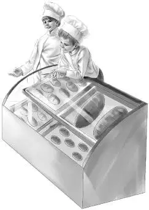
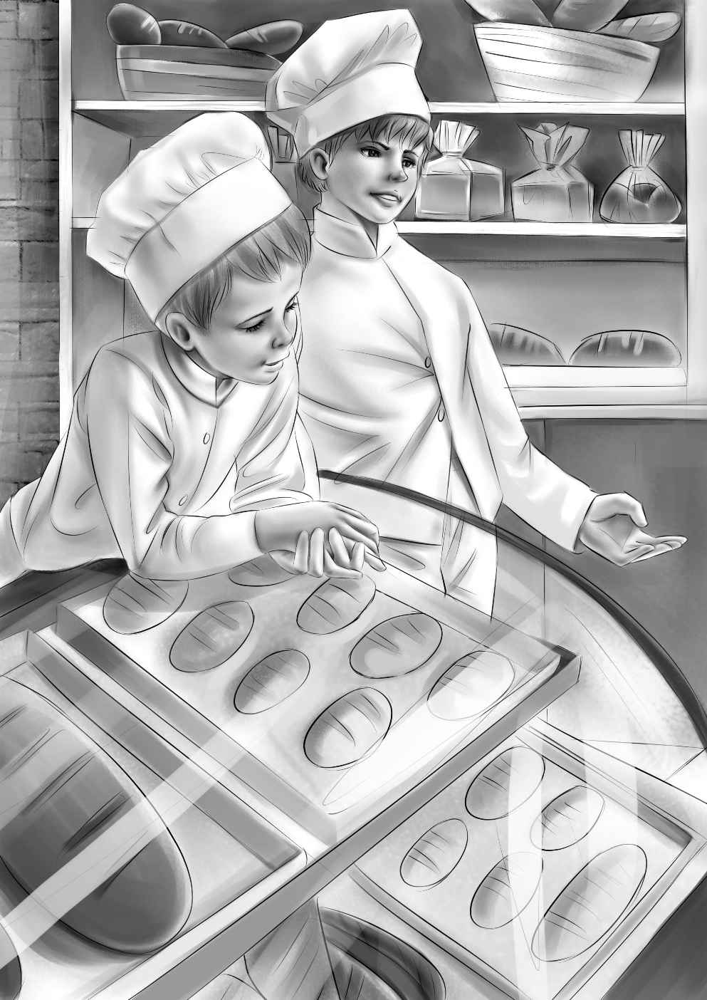
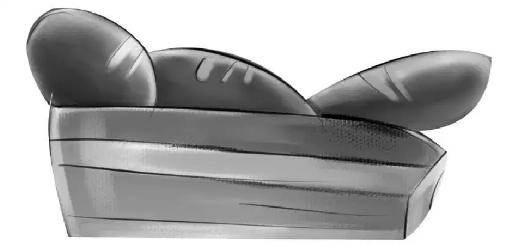
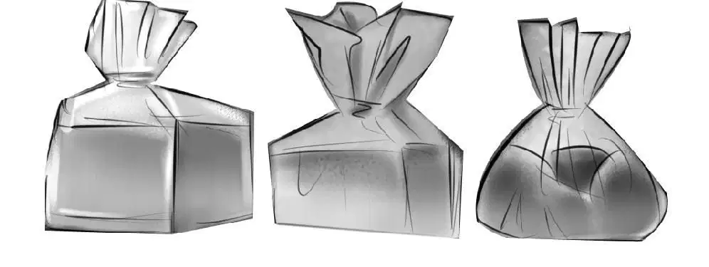

One More Question

班尼说得没错，没过多久，商店就装修好了。一开始，便由木工们拆掉了两个店铺中间的那堵墙，合成了一间大铺子。
班尼注意到其中一位木匠很特别，那人已经上了年纪，行动有些迟缓，但手艺却很精湛。他常常望着班尼和帕奇，那双蓝眼睛熠熠发光。奥登一家还注意到，不论他们谈论什么，老木匠总是倾听得很认真，尤其是当他们谈论起小木屋或是托马斯·尼尔森的面包时，老木匠更是会停下手里的榔头，专注地听上一会儿。
“好奇怪，木匠老爷爷怎么会对我们的话题那么感兴趣？”杰西说，“不过他的手艺真不错，经他修理过的窗户再也不吱嘎乱响了。”
但接下来，当油漆工进场后，老木匠便渐渐被淡忘了。当墙壁被刷成亮黄色，弗兰克商店也用同样的颜色粉刷一新后，这儿已经变成一间通透的大店铺了。
接下来，地上铺起了灰砖，玻璃窗被擦得透亮，一台台烤炉和冰箱也被搬进了面包间。商店挂起了新招牌：
弗兰克商店
班尼小面店专卖店
不仅如此，连电台也报导了商店的消息，报纸上还登出了托马斯、芭芭拉、帕奇和班尼的照片。
尼尔森一家置办了白色工作服，还添置了一桶桶面粉、砂糖，鸡蛋则更是整箱整箱地运送进来。
商店终于开业了。那是一个星期六，班尼和帕奇都在场，而亨利正在学校上课。
毫无疑问，人们对新开张的商店抱着浓厚的兴趣，因为星期六一大早，尼尔森一家和罗杰·弗兰克赶来开门时，发现早已有六位客人在台阶上等候了。
班尼和帕奇立刻换上白色的工作服，站到柜台后，帮尼尔森太太卖面包。帕奇还太小，不会收钱和找零，不过他还是尽力帮着吆喝和装袋，所有客人看到他都会露出微笑，一名女顾客还夸了一句：“多乖的孩子啊！”
凡是来弗兰克商店购物的客人都会走进面包房，而凡是来买面包的都会到百货区转转。自从面包房开张后，罗杰·弗兰克商店的销量就翻了倍。

这天，一名女顾客走进店里，说道：“我对这些小面包很感兴趣。我敢说，秘方的背后，一定有着不寻常的故事吧？”
“对，是这样的。”帕奇说。
很快，班尼和帕奇的身边就聚满了听故事的人群，当听到望望撵松鼠那段时，大家都哈哈大笑起来。
“这故事真精彩。”那名女顾客说，“我好喜欢橱柜门后发现密码的那一段，你们知道那个问号代表着什么吗？”
“不知道。”帕奇摇了摇头，“除了爸爸妈妈，谁都不知道。”
就在班尼的肚子饿得咕咕叫时，门开了，奥登先生、杰西和维莉走了进来。
“你们还好吧？”奥登先生问道。
“我饿坏啦。”班尼说。
托马斯笑了起来：“可不是么，生意太好，我们都没顾得上吃饭。”
“所以我们才特地赶过来的嘛。”奥登先生说，“得换换班了，你们出去吃午饭，这儿有我们。”
“我们原本打算就在店里吃些面包，喝点咖啡的。”托马斯说。

“得啦，磨刀不误砍柴工。”奥登先生说，“把你那件白色的工作服给我，维莉可以穿班尼的。”
芭芭拉则把自己的工作服递给杰西，大家很快就准备妥当了。而当奥登先生的朋友们看到他在店里卖面包时，统统都以为这个老顽童在开玩笑。
饥肠辘辘的四人走向街边的餐馆，一路上都有行人跟他们打招呼，赞上一句：“托马斯做的面包真好吃。”
等着上菜的时候，班尼听到一个小女孩说：“咱们这儿有这么好的面包房，我太开心啦！我好喜欢柜台旁边的小帕奇。”
小女孩身边的男人则说：“哪怕只进去听听他说话，我都喜欢。”
班尼和帕奇相互做了一个鬼脸。
这一天十分漫长，但也十分快活。尼尔森一家与奥登一家共进晚餐后，便准备回村里的老店了。
帕奇说：“我还真想念那些松鼠，望望追它们的样子好有趣。”
“哈，我可不想它们。”杰西说，“我只是好奇，它们现在去哪儿安家了。”
“嘿，那咱们哪天再回一趟木屋吧。”班尼说，“看还能不能找到那些松鼠。”
“咱们可以带便当过去当午饭。”维莉说。
杰西看了托马斯一眼，说：“我还是想不明白，蓝色卡片是怎么跑到卧室棚顶上去的。”
“我也没琢磨出来。”托马斯说。
不久之后的一个晴朗日子里，奥登一家和尼尔森一家再次上了山，大家都想去看看小木屋。还没走到木屋跟前，望望就叫了起来。
“听！”班尼说，“有敲打声！”
大家加快了脚步，只见一架梯子靠在小木屋的侧面，有人正在房顶上钉木瓦，那人看到来客后，挥了挥手。

“是木匠老爷爷！”杰西说，“就是曾在弗兰克商店装修的那位，记得么？”
班尼大声喊道：“您把松鼠赶出来没有？”
“上面没有松鼠！”木匠叫道，“我看过了。”接着，他指了指木屋前的一棵大树，“你们的松鼠在那棵树上呢，有好多只。”
“哇噢！”帕奇叫了起来，“迈克说它们会搬进树洞里，还真没说错。”
大家起初都没看清究竟有几只松鼠，它们在树上东跑西窜，追逐嬉戏着。最后还是班尼数清楚了，一共有五只，而台阶上的核桃一颗也没剩下。
“我敢说，它们准是在天黑前就把所有核桃都搬进去了。”班尼说。
“反正不用再为松鼠担心了。”维莉说，“咱们到小屋里吃午饭吧，在外面吃太冷了。”
“我马上就走，”木匠叫道，“不会打扰你们吃午餐的。”
“不急的。”杰西说，“我们先进去瞧瞧。”
“不过我离开之前，想要跟你们谈谈。”老木匠说道。
“他究竟想谈什么呢？”班尼有些纳闷。他掏出钥匙，大伙儿都进了屋。芭芭拉和杰西把午餐摆在了桌上。
不一会儿，木匠来敲门了，帕奇把他请了进来。木匠坐在沙发上，手里拿着他那顶老式礼帽。他看了看尼尔森一家，开口说道：“我叫多恩·派瑞，之前在你们新开的商店干过活。听说你们在棚顶找到了写着秘方的卡片？”
“没错，怪就怪在这里。”托马斯·尼尔森说道，“我敢肯定，爸爸一定想把秘方留给我，可我想不通的是，卡片藏得那么隐秘，他怎么就确信我一定能找到？”
“那是因为他不知道棚顶后来会翻修。”木匠说，“你爸爸去世后，屋子卖给了运动者俱乐部，他们让我把卧室的棚顶封死，这样晚上就会暖和些。”
“我就说呢。”班尼说道。
老木匠继续讲道：“翻修的时候，我的确发现房梁上有几张纸，还有几张蓝色卡片，不过当时并没特别留意它们。”
“我们还以为是松鼠带上去的。”杰西说。
“不是的。”派瑞先生说道，“是老尼尔森先生放上去的，可惜被我无意中封住了。”
“这样一来，一切都说得通了。”托马斯·尼尔森说，“我一直不知道阁楼是我爸去世后才封死的，还以为之前就是这样。现在总算真相大白了。”
“还好遇到了暴雪。”杰西兴奋地叫道，“要是没下雪，咱们根本找不到配方。如果雪不大，棚顶也不会被压垮。”
“现在好了，不管是松鼠、配方还是‘班尼小面包’，咱们都不用再担心啦！”维莉补充道。
托马斯·尼尔森笑了起来：“配方已经存进了银行和我的脑袋里。”
“还有我的脑袋。”芭芭拉说。
“可我的脑袋里没有。”帕奇失望地摇了摇头。
“这也是好事。”班尼说，“要是你知道了配方，肯定忍不住逢人就说。”
直到今天，“班尼小面包”的配方只有托马斯和芭芭拉两人知道，而且他们永远都不会说出来——当然，除非等到帕奇长大成人，可以保守秘密的那一天。